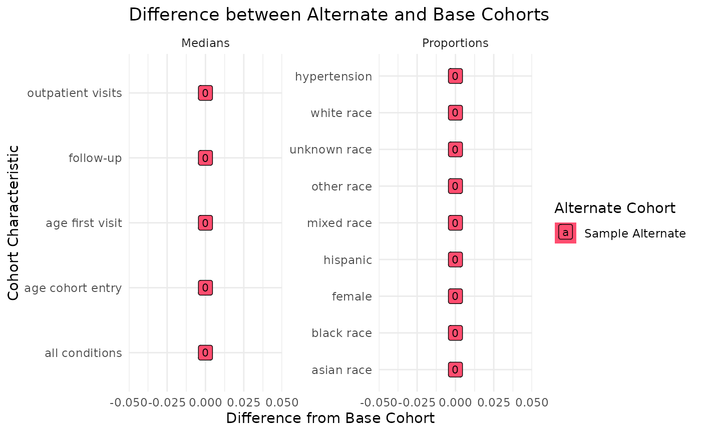
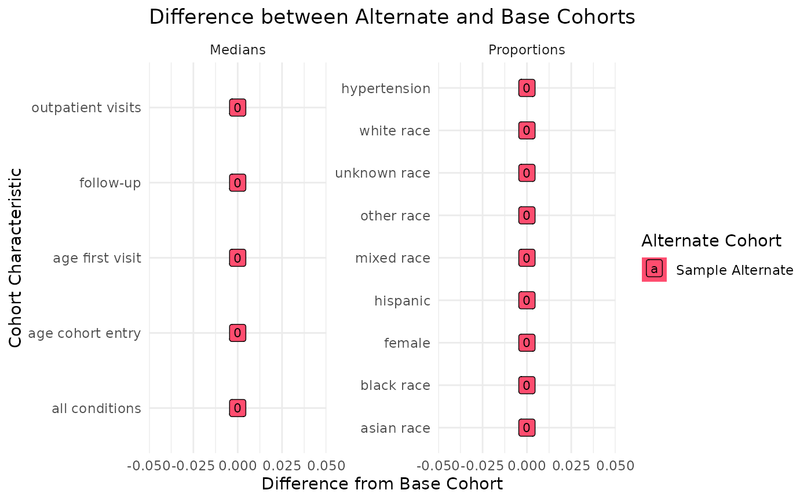

This is a plausibility module that will characterize user-provided base cohort and alternate cohort definitions using a selection of continuous and categorical variables. It will then use these values to compare each alternate definition to the base cohort and evaluate how changes in the cohort definition impact the patient population. Users have the option to provide definitions for several variable types:
demographic_mappings: define a set of demographic variables of interestdomain_tbl: define domain definitions to assess patient fact density + utilization (similar to Patient Facts module)specialty_concepts: define a set of specialty concepts to evaluate specialty care sought out by the cohort membersoutcome_concepts: define study outcome variables Sample versions of these input files are available withsensitivityselectioncriteria::. This module is compatible with both the OMOP and PCORnet CDMs based on the user's selection.
Usage
ssc_process(
base_cohort,
alt_cohorts,
omop_or_pcornet,
multi_or_single_site = "single",
anomaly_or_exploratory = "exploratory",
person_tbl = cdm_tbl("person"),
visit_tbl = cdm_tbl("visit_occurrence"),
provider_tbl = NULL,
care_site_tbl = NULL,
demographic_mappings = NULL,
specialty_concepts = NULL,
outcome_concepts = NULL,
domain_tbl = sensitivityselectioncriteria::ssc_domain_file,
domain_select = sensitivityselectioncriteria::ssc_domain_file %>% distinct(domain)
%>% pull()
)Arguments
- base_cohort
tabular input || required
A table representing all patients who meet the base cohort definition, used as the "gold standard" for comparative analyses. This table should have at least:
site| character | the name(s) of institutions included in your cohortperson_id/patid| integer / character | the patient identifierstart_date| date | the start of the cohort periodend_date| date | the end of the cohort period
Note that the start and end dates included in this table will be used to limit the search window for the analyses in this module.
- alt_cohorts
tablular input or list of tabular inputs || required
A table or list of tables (can be named or unnamed) representing patients meeting alternative cohort definitions, which will be assessed against the base cohort. These tables should have the same structure as the
base_cohort.If an unnamed list is provided, numbers will be assigned to each cohort definition for labeling purposes. For named lists, the names will be used to label the alternate cohorts.
- omop_or_pcornet
string || required
A string, either
omoporpcornet, indicating the CDM format of the dataomop: run thessc_process_omop()function against an OMOP CDM instancepcornet: run thessc_process_pcornet()function against a PCORnet CDM instance
- multi_or_single_site
string || defaults to
singleA string, either
singleormulti, indicating whether a single-site or multi-site analysis should be executed- anomaly_or_exploratory
string || defaults to
exploratoryA string, either
anomalyorexploratory, indicating what type of results should be produced.Exploratory analyses give a high level summary of the data to examine the fact representation within the cohort. Anomaly detection analyses are specialized to identify outliers within the cohort.
- person_tbl
tabular input || defaults to
cdm_tbl('person')The CDM
personordemographictable that contains basic demographic information (sex, race, etc.) about the cohort members- visit_tbl
tabular input || defaults to
cdm_tbl('visit_occurrence')The CDM
visit_occurrence,visit_detail, orencountertable that contains information about the patients' healthcare encounters- provider_tbl
tabular input || defaults to
NULLThe CDM table with provider & provider specialty information. This table is only used if a
specialty_conceptsconcept set is provided.- care_site_tbl
tabular input || defaults to
NULLThe CDM table with care site/facility & related specialty information. This table is only used if a
specialty_conceptsconcept set is provided.- demographic_mappings
tabular input || defaults to
NULLA table defining how demographic elements should be defined. If left as NULL, the default demographic mappings for the CDM will be used, which can be viewed in
ssc_omop_demographicsandssc_pcornet_demographics. If a different table is provided by the user, those definition will be used instead. This table should minimally contain:demographic| character | the label for the demographic category (ex: female, asian_race)concept_field| character | the field in the CDM where this information is storedfield_values| character | the concept or concepts that are used to define the demographic category
- specialty_concepts
tabular input || defaults to
NULLA concept set with concepts representing the specialties of interest to be identified for the cohort. This table should minimally contain either the
concept_idfield (OMOP) or theconcept_codefield (PCORnet)- outcome_concepts
tabular input || defaults to
NULLA concept set used to define any relevant outcome variables to be assessed in each cohort. This input should contain one of following:
concept_id| integer | the concept_id of interest (required for OMOP)concept_code| character | the code of interest (required for PCORnet)
And both of:
variable| character | a string label grouping one concept code into a larger variable definitiondomain| character | the name of the CDM table where the concept can be found
For certain PCORnet applications, it should also contain
vocabulary_id| character | the vocabulary of the code, which should match what is listed in the domain table'svocabulary_field
To see an example of this file structure, see
?sensitivityselectioncriteria::ssc_outcome_file- domain_tbl
tabular input || defaults to the internal
ssc_domain_fileA table or CSV file defining the domains to be assessed both for facts per patient year computations & for any outcome variables. This input should contain:
domain| character | a string label for the domaindomain_tbl| character | the name of the CDM table where this domain is definedconcept_field| character| the string name of the field in the domain table where the concepts are locateddate_field| character | the name of the field in the domain table with the date that should be used for temporal filteringvocabulary_field| character | for PCORnet applications, the name of the field in the domain table with a vocabulary identifier to differentiate concepts from one another (ex: dx_type); can be set to NA for OMOP applicationsfilter_logic| character | logic to be applied to the domain_tbl in order to achieve the definition of interest; should be written as if you were applying it in adplyr::filtercommand in R
To see an example of this file structure, see
?sensitivityselectioncriteria::ssc_domain_file- domain_select
string or vector || defaults to all internal
ssc_domain_filedomainsA string or vector of domain names, matching those listed in
domain_tbl, that should be used in the computation of facts per patient yearThis vector does NOT need to include domains used in the computation for outcomes, as those will be accessed from the
domain_tblseparately
Value
This function will return a dataframe summarizing fact and demographic distributions for each of the provided cohort definitions. For a more detailed description of output specific to each check type, see the PEDSpace metadata repository
Examples
#' Source setup file
source(system.file('setup.R', package = 'sensitivityselectioncriteria'))
#' Create in-memory RSQLite database using data in extdata directory
conn <- mk_testdb_omop()
#' Establish connection to database and generate internal configurations
initialize_dq_session(session_name = 'ssc_process_test',
working_directory = my_directory,
db_conn = conn,
is_json = FALSE,
file_subdirectory = my_file_folder,
cdm_schema = NA)
#> Connected to: :memory:@NA
#> To see environment settings, run `get_argos_default()`
## silence SQL trace for this example
config('db_trace', FALSE)
#' Build mock base study cohort
base_cohort <- cdm_tbl('person') %>% dplyr::distinct(person_id) %>%
dplyr::mutate(start_date = as.Date(-5000),
#RSQLite does not store date objects,
#hence the numerics
end_date = as.Date(15000),
site = ifelse(person_id %in% c(1:6), 'synth1', 'synth2'))
#' Build mock alternate study cohort
alt_cohort <- cdm_tbl('person') %>% dplyr::distinct(person_id) %>%
head(100) %>%
dplyr::mutate(start_date = as.Date(-5000),
#RSQLite does not store date objects,
#hence the numerics
end_date = as.Date(15000),
site = ifelse(person_id %in% c(1:6), 'synth1', 'synth2'))
#' Prepare input tables
ssc_domain_tbl <- dplyr::tibble(domain = c('all conditions', 'outpatient visits'),
domain_tbl = c('condition_occurrence', 'visit_occurrence'),
concept_field = c('condition_concept_id', 'visit_concept_id'),
date_field = c('condition_start_date', 'visit_start_date'),
vocabulary_field = c(NA, NA),
filter_logic = c(NA, 'visit_concept_id == 9202'))
ssc_outcome_tbl <- read_codeset('dx_hypertension') %>%
dplyr::mutate(variable = 'hypertension', domain = 'all conditions')
#' Execute `ssc_process` function
#' This example will use the single site, exploratory, cross sectional
#' configuration
ssc_process_example <- ssc_process(base_cohort = base_cohort,
alt_cohorts = list('Sample Alternate' = alt_cohort),
omop_or_pcornet = 'omop',
multi_or_single_site = 'single',
anomaly_or_exploratory = 'exploratory',
domain_tbl = ssc_domain_tbl,
domain_select = c('all conditions', 'outpatient visits'),
outcome_concepts = ssc_outcome_tbl) %>%
suppressMessages()
#> ┌ Output Function Details ──────────────────────────────────────┐
#> │ You can optionally use this dataframe in the accompanying │
#> │ `ssc_output` function. Here are the parameters you will need: │
#> │ │
#> │ Always Required: process_output │
#> │ Required for Check: alt_cohort_filter │
#> │ │
#> │ See ?ssc_output for more details. │
#> └───────────────────────────────────────────────────────────────┘
ssc_process_example
#> $summary_values
#> # A tibble: 28 × 7
#> site cohort_id cohort_characteristic fact_group fact_summary cohort_total_pt
#> <chr> <chr> <chr> <chr> <dbl> <int>
#> 1 comb… Sample A… median_age_cohort_en… Cohort De… -12.0 12
#> 2 comb… Sample A… median_age_first_vis… Cohort De… 1.46 12
#> 3 comb… Sample A… median_all condition… Clinical … 0 12
#> 4 comb… Sample A… median_fu Cohort De… 0 12
#> 5 comb… Sample A… median_outpatient vi… Utilizati… 0 12
#> 6 comb… base_coh… median_age_cohort_en… Cohort De… -12.0 12
#> 7 comb… base_coh… median_age_first_vis… Cohort De… 1.46 12
#> 8 comb… base_coh… median_all condition… Clinical … 0 12
#> 9 comb… base_coh… median_fu Cohort De… 0 12
#> 10 comb… base_coh… median_outpatient vi… Utilizati… 0 12
#> # ℹ 18 more rows
#> # ℹ 1 more variable: output_function <chr>
#>
#> $cohort_overlap
#> # A tibble: 1 × 3
#> site cohort_group group_ct
#> <chr> <chr> <int>
#> 1 combined base_cohort&Sample Alternate 12
#>
#' Execute `ssc_output` function
ssc_output_example <- ssc_output(process_output = ssc_process_example,
alt_cohort_filter = 'Sample Alternate') %>%
suppressMessages()
ssc_output_example[[1]]
 ssc_output_example[[2]]

#' Easily convert the graph into an interactive ggiraph or plotly object with
#' `make_interactive_squba()`
make_interactive_squba(ssc_output_example[[2]])
#> Warning: geom_GeomLabel() has yet to be implemented in plotly.
#> If you'd like to see this geom implemented,
#> Please open an issue with your example code at
#> https://github.com/ropensci/plotly/issues
#> Warning: geom_GeomLabel() has yet to be implemented in plotly.
#> If you'd like to see this geom implemented,
#> Please open an issue with your example code at
#> https://github.com/ropensci/plotly/issues
ssc_output_example[[2]]

#' Easily convert the graph into an interactive ggiraph or plotly object with
#' `make_interactive_squba()`
make_interactive_squba(ssc_output_example[[2]])
#> Warning: geom_GeomLabel() has yet to be implemented in plotly.
#> If you'd like to see this geom implemented,
#> Please open an issue with your example code at
#> https://github.com/ropensci/plotly/issues
#> Warning: geom_GeomLabel() has yet to be implemented in plotly.
#> If you'd like to see this geom implemented,
#> Please open an issue with your example code at
#> https://github.com/ropensci/plotly/issues